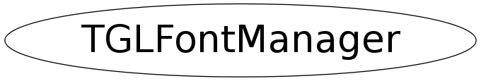

Function Members (Methods)
public:
| TGLFontManager() | |
| virtual | ~TGLFontManager() |
| static TClass* | Class() |
| void | ClearFontTrash() |
| static TObjArray* | GetFontFileArray() |
| static const char* | GetFontNameFromId(Int_t) |
| static Int_t | GetFontSize(Int_t ds) |
| static Int_t | GetFontSize(Int_t ds, Int_t min, Int_t max) |
| static TGLFontManager::FontSizeVec_t* | GetFontSizeArray() |
| virtual TClass* | IsA() const |
| void | RegisterFont(Int_t size, Int_t file, TGLFont::EMode mode, TGLFont& out) |
| void | RegisterFont(Int_t size, const char* name, TGLFont::EMode mode, TGLFont& out) |
| void | ReleaseFont(TGLFont& font) |
| virtual void | ShowMembers(TMemberInspector& insp) |
| virtual void | Streamer(TBuffer& b) |
| void | StreamerNVirtual(TBuffer& b) |
protected:
| static void | InitStatics() |
private:
| TGLFontManager(const TGLFontManager&) | |
| TGLFontManager& | operator=(const TGLFontManager&) |
Class Charts
{kind=link}
{kind=link}
{kind=link}
{kind=link}

Function documentation
void RegisterFont(Int_t size, Int_t file, TGLFont::EMode mode, TGLFont& out)
Provide font with given size, file and FTGL class.
void RegisterFont(Int_t size, const char* name, TGLFont::EMode mode, TGLFont& out)
Get mapping from ttf id to font names. Table taken from TTF.cxx.
void ReleaseFont(TGLFont& font)
Release font with given attributes. Returns false if font has not been found in the managers font set.
TGLFont& operator=(const TGLFontManager& )
TGLFontManager(const TGLFontManager& )
FontSizeVec_t* GetFontSizeArray()